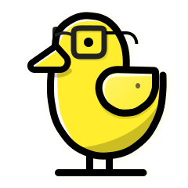

Analytics your AI agent can read
> Which websites sent us the most sign-ups last month?
● Reading every event from Quacklytics
| came from | sign-ups |
|---|
● October had 19 sign-ups. Most came straight to your site or from Google.
Your storage
> Which features do teams use most?
Reading 0 months of events…
● Done
Your AI agent